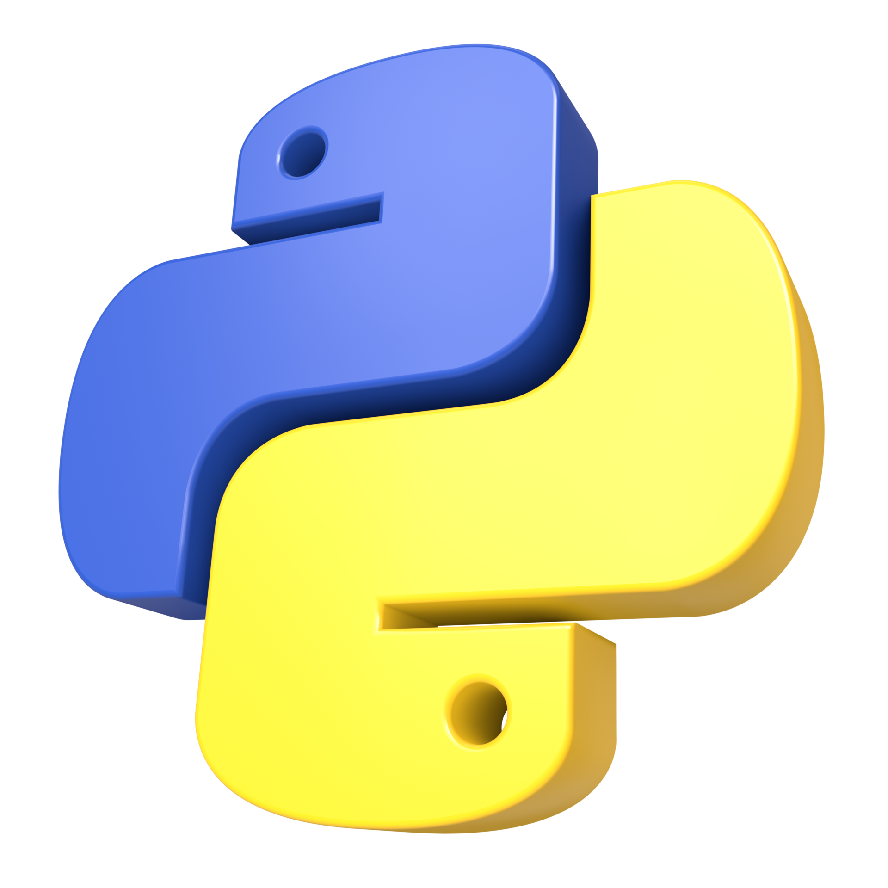

HI, I'M
Kim Embarnace
I am a third-year Information Technology student passionate about technology, programming, and web development. I enjoy creating functional and user-friendly digital solutions while continuously learning new technologies.
Contact Me